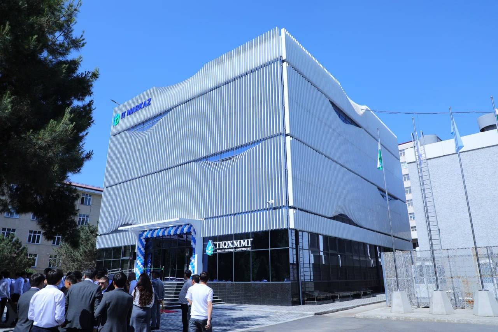
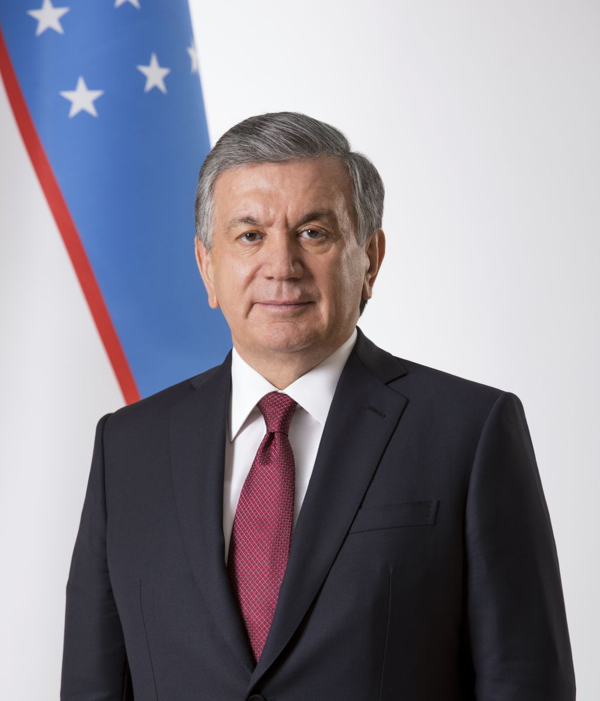

Результаты школы ТИИИМСХ на олимпиадах по физике
Ученики и наставники специализированной школы получили награды за результаты на международных олимпиадах по физике.
Официальный источник
Узбекистан и ТИИИМСХ
От образования и науки до транспорта и культуры. Новости Узбекистана, инициативы президента и исследования ТИИИМСХ.
Жизнь университета, научное сотрудничество и крупные проекты страны.
Ученики и наставники специализированной школы получили награды за результаты на международных олимпиадах по физике.
Официальный источникМинистерство сообщило об экономии 10,69 млрд м³ воды в январе–октябре.
Официальный источникНа совещании у президента рассмотрели темпы строительства, единую архитектурную концепцию и осеннюю посадку деревьев.
Официальный источник
Вузы договорились о совместных образовательных программах, исследованиях и академическом обмене.
Официальный источникБаходир Мирзаев получил специальную награду за организацию международных экзаменов.
Официальный источникУниверситет сообщил о преобразованиях, предусматривающих применение ИИ в обучении.
Официальный источникНа встрече с президентом сообщили о вводе в эксплуатацию 413 новых производственных мощностей.
Официальный источник
Президент ознакомился с условиями для паломников в заново построенном комплексе в Самаркандской области.
Официальный источник
В числе открытых объектов — школа на 2 000 мест, парк «Сохил» и энергетическая инфраструктура.
Официальный источникПрезидент осмотрел стройплощадку музея по проекту Тадао Андо. Строительство продолжается.
Официальный источникПрезиденту представили опыт 14 районов, меры по сокращению потерь и пятилетнюю программу.
Официальный источникПостроены линии Самарканд–Ургут и аэропорт Ургенча–Хива. На участке Навои–Бухара открыли вторую электрифицированную линию.
Официальный источникПервый форум в Центре исламской цивилизации в Узбекистане собрал участников более чем из 40 стран.
Официальный источникПодходящих записей нет.
Национальный исследовательский университет готовит специалистов по ирригации, мелиорации и гидротехнике. В 2026 году его специалисты изучили монтаж водосберегающего оборудования и труб в Ташкентской области и подготовили рекомендации.
По данным УзА от 10 марта 2026 года, в университете обучались более 11 тысяч студентов, действовали 7 факультетов, 37 кафедр и 38 направлений подготовки. O‘zA

Постановлением президента № ПП-42 институт получил статус национального исследовательского университета. Документ одобрил создание Института фундаментальных и прикладных исследований и утвердил программу модернизации учебных лабораторий.
O‘zAПо инициативе президента при ТИИИМСХ открылась Школа водников. Она обучает фермеров и специалистов водного хозяйства практическому применению водосберегающих технологий.
O‘zAШавкат Мирзиёев и президент Казахстана Касым-Жомарт Токаев торжественно открыли филиал ТИИИМСХ в Алматы для подготовки специалистов по востребованным техническим направлениям.
O‘zAНа встрече глав государств Центральной Азии президент предложил создать при ТИИИМСХ региональный центр компетенций для подготовки специалистов водного хозяйства.
O‘zAПрезидент рассмотрел предложения по инженерному образованию. Для дуального обучения предложили четыре дня теории и два дня оплачиваемой практики в неделю. Одобрено предложение расширить магистратуру по водной дипломатии и увеличить число грантовых мест.
O‘zAПостановление президента № ПП-122 предусмотрело внедрение дуального обучения, создание платформы «Цифровой университет» и модернизацию учебных лабораторий ТИИИМСХ в 2026–2028 годах.
Lex.uzЧетырёхэтажный IT-центр открылся 10 мая 2025 года. В нём есть помещения для программирования и обучения, офис регистратора и отдел разработки ПО для цифрового управления водными ресурсами. Официальный источник
По сообщению УзА, 15 декабря 2025 года президенту доложили об IT-центре на 200 мест, цифровой библиотеке и офисе регистратора. Президент поручил разработать меры для вхождения ТИИИМСХ в число 300 лучших университетов мира. O‘zA




Президент
В 1981 году окончил ТИИИМСХ по специальности инженер-механик. Работал в институте научным сотрудником, преподавателем и проректором. Избран президентом в 2016 году, после выборов 2023 года вступил в должность 14 июля.
Родился 24 июля 1957 года в Зааминском районе Джизакской области. Кандидат технических наук, доцент. В 2003 году утверждён премьер-министром Узбекистана.
Объекты, построенные или модернизированные по инициативе президента, а также введённые в эксплуатацию при его участии.
Новый Ташкент
12 октября 2026 года при участии президента открыли семь объектов, включая школу, парк «Сохил», подстанцию и станцию тригенерации.
Фоторепортаж и источникСамаркандская область
Комплекс заново построили по инициативе президента. В него входят мечеть на 10 000 человек, мавзолей и современный музей.
Фоторепортаж и источник
Сурхандарья · Термез
Проект представили президенту в 2021 году. Построено 246 км магистральных и внутренних сетей. По отчёту за февраль 2026 года, вода поступает в Термез и десять районов.
Фоторепортаж и источник
Наманган · Чартак
В рамках государственно-частного партнёрства установили экономичные насосы. Станция орошает 815 га. В 2025 году президент поручил распространить этот опыт.
Фоторепортаж и источник
Сурхандарья · Сариасия
После поручения президента 2019 года плотину подняли на 20 м и установили два агрегата. Модернизацию завершили в 2023 году, мощность достигла 175 МВт.
Фоторепортаж и источникУказы, постановления и стратегии. Опубликованные результаты приведены с датами отчётов.
Приборы «Умная вода» установили на 13 310 объектах, а 106 крупных объектов автоматизировали.
Официальный источникУказ УП–140 определил меры на 2026–2027 годы по улучшению водоснабжения, качества услуг и энергоэффективности.
Официальный источникПо официальным данным, охват вырос с 63% в 2017 году до почти 83% в июле 2026 года.
Официальный источникУказ УП–99 установил меры по привлечению предпринимателей и проектных организаций к отдельным водохозяйственным проектам.
Официальный источникНа майском совещании у президента сообщили о бетонировании 2 000 км магистральных каналов и строительстве 721 км каналов.
Официальный источникПостановление ПП–122 закрепило кафедры за регионами для изучения водохозяйственных проблем и подготовки рекомендаций.
Официальный источникУказ УП–21 установил целевые показатели экономии воды, эффективности орошения и охраны окружающей среды.
Официальный источникВ феврале 2026 года сообщили об охвате 2,6 млн га. Цель на 2028 год — 3,5 млн га.
Официальный источникПрограмма ПП–250 предусматривает обновление каналов и сооружений, цифровизацию управления и внедрение водосберегающих технологий.
Официальный источникКодекс, утверждённый законом ЗРУ–1076, регулирует управление водными ресурсами, их использование и охрану водных объектов.
Официальный источникУказ УП–158 включил экономию воды в число приоритетов. В 2026 году его заменил указ УП–21.
Официальный источникПостановление ПП–42 изменило статус института и поставило задачи по развитию инженерного образования и передачи технологий.
Официальный источникПостановление ПП–5005 предусматривало цифровизацию объектов, мониторинг насосных станций и ресурсосберегающее орошение.
Официальный источникУказ УП–6024 определил приоритеты водной безопасности, управления ресурсами и улучшения орошаемых земель.
Официальный источникПодходящих записей нет.
Национальный исследовательский университет готовит специалистов по ирригации, мелиорации и гидротехнике. В 2026 году его специалисты изучили монтаж водосберегающего оборудования и труб в Ташкентской области и подготовили рекомендации.
По данным УзА от 10 марта 2026 года, в университете обучались более 11 тысяч студентов, действовали 7 факультетов, 37 кафедр и 38 направлений подготовки. O‘zA
Постановлением президента № ПП-42 институт получил статус национального исследовательского университета. Документ одобрил создание Института фундаментальных и прикладных исследований и утвердил программу модернизации учебных лабораторий.
O‘zAПо инициативе президента при ТИИИМСХ открылась Школа водников. Она обучает фермеров и специалистов водного хозяйства практическому применению водосберегающих технологий.
O‘zAШавкат Мирзиёев и президент Казахстана Касым-Жомарт Токаев торжественно открыли филиал ТИИИМСХ в Алматы для подготовки специалистов по востребованным техническим направлениям.
O‘zAНа встрече глав государств Центральной Азии президент предложил создать при ТИИИМСХ региональный центр компетенций для подготовки специалистов водного хозяйства.
O‘zAПрезидент рассмотрел предложения по инженерному образованию. Для дуального обучения предложили четыре дня теории и два дня оплачиваемой практики в неделю. Одобрено предложение расширить магистратуру по водной дипломатии и увеличить число грантовых мест.
O‘zAПостановление президента № ПП-122 предусмотрело внедрение дуального обучения, создание платформы «Цифровой университет» и модернизацию учебных лабораторий ТИИИМСХ в 2026–2028 годах.
Lex.uzЧетырёхэтажный IT-центр открылся 10 мая 2025 года. В нём есть помещения для программирования и обучения, офис регистратора и отдел разработки ПО для цифрового управления водными ресурсами. Официальный источник
По сообщению УзА, 15 декабря 2025 года президенту доложили об IT-центре на 200 мест, цифровой библиотеке и офисе регистратора. Президент поручил разработать меры для вхождения ТИИИМСХ в число 300 лучших университетов мира. O‘zA